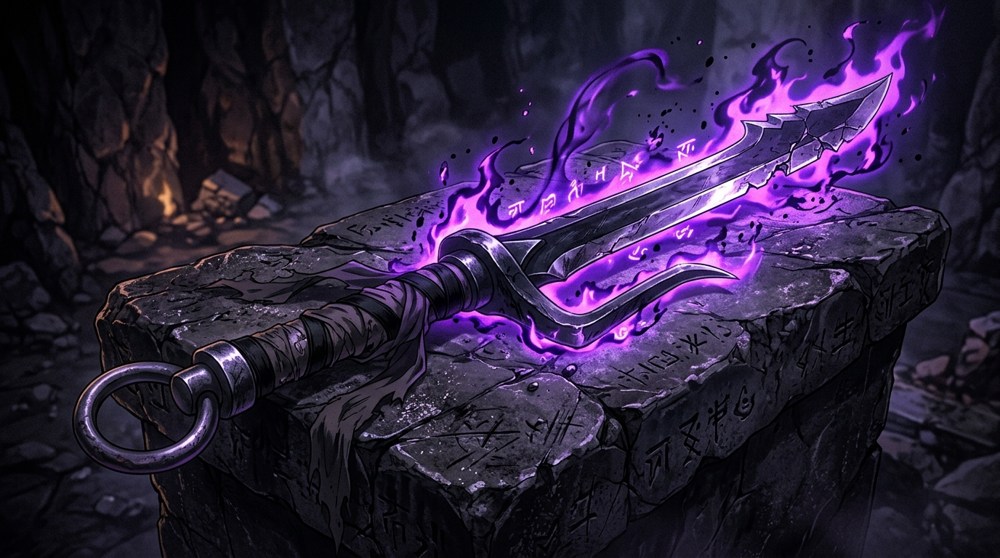

01 / SPECIAL GRADE
TECHNIQUE NULLIFIER
天逆鉾
INVERTED SPEAR OF HEAVEN
A two-pronged jitte dagger imbued with a foreign cursed technique that forcibly nullifies and cancels any active jujutsu upon physical contact. The decisive weapon used to pierce Satoru Gojo's Limitless Infinity.
特級呪具
AMANO HOKO · ABSOLUTE NULLIFICATION